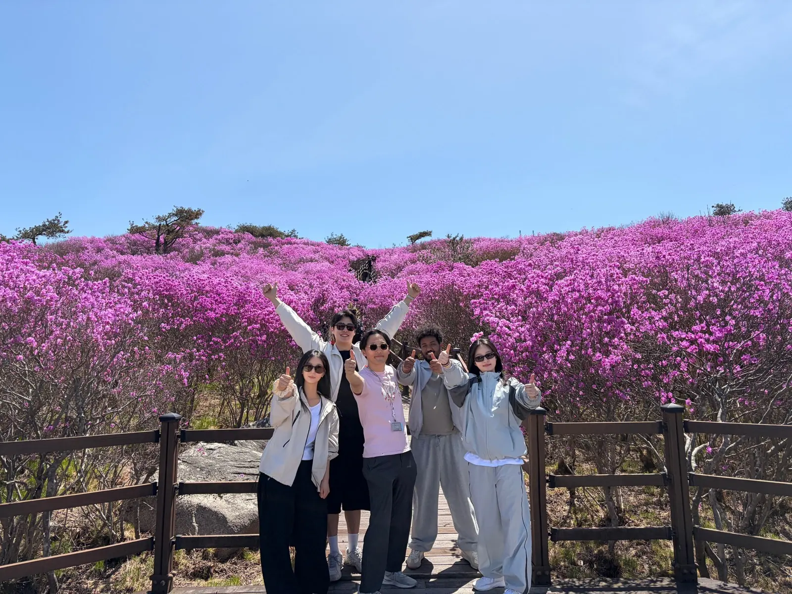
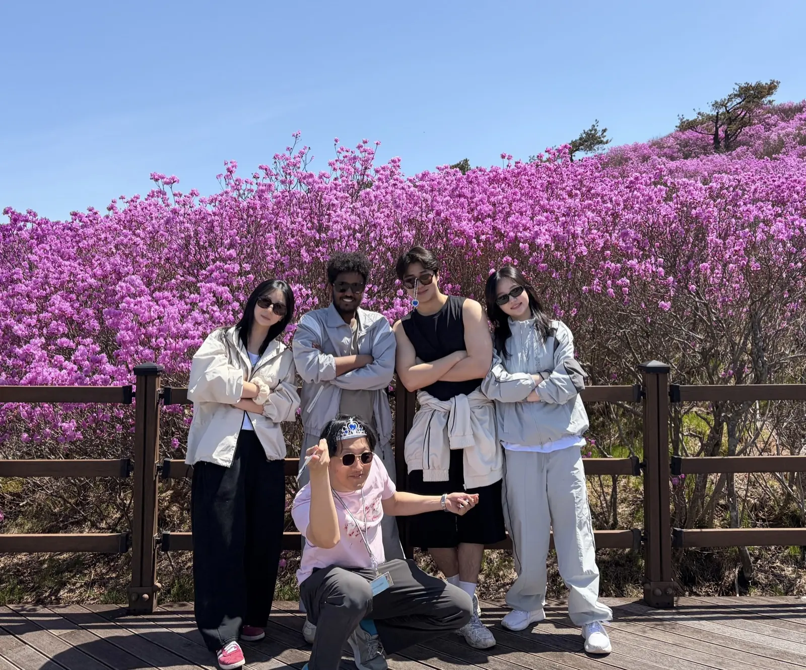
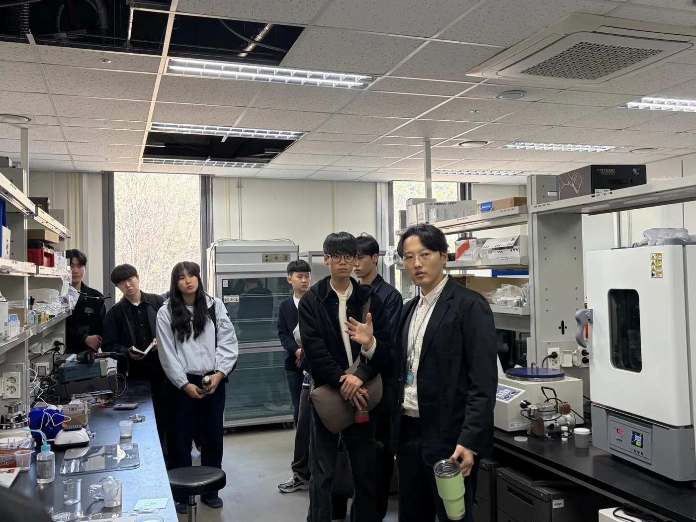
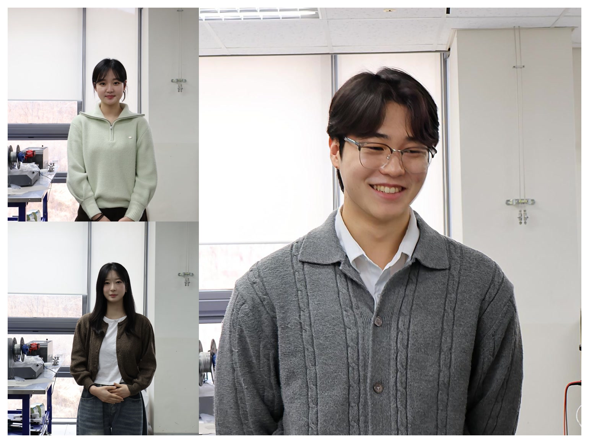
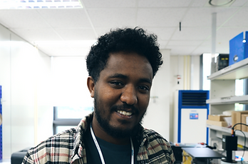
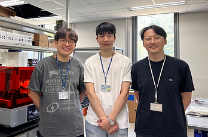
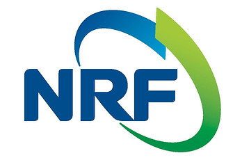

06
2026년 4월


2026년 봄 학과 산행 행사
EMDP Lab은 2026년 4월 학과에서 주최한 산행 행사에 참여했습니다. 연구실 밖에서 함께 시간을 보내며 팀워크를 다지는 좋은 기회였습니다.
연구실 연혁
연구비 수주와 인턴십, 신규 학생 합류 등 연구실 성장의 주요 이정표를 기록합니다.
성장 중인 연구실의 추진력과 지도 역량, 프로젝트 활동을 확인할 수 있습니다.
최근 소식
06
2026년 4월


EMDP Lab은 2026년 4월 학과에서 주최한 산행 행사에 참여했습니다. 연구실 밖에서 함께 시간을 보내며 팀워크를 다지는 좋은 기회였습니다.
05
2026년 3월 28일

EMDP Lab은 2026년 3월 28일 토요일 Open Lab 행사를 열었습니다. 방문자들에게 연구 환경과 시설, 진행 중인 연구를 소개했습니다.
04
2026년 3월

2026년 3월 유 지현 학생과 박 인자 학생이 석박사통합과정으로, 서 준형 학생이 석사과정으로 합류했습니다. 소재 설계와 공정 개발, 실험 수행 역량이 더욱 강화되었습니다.
03
2025년 가을

Negasi Teklay Weldesemat 학생이 2025년 가을학기 박사과정으로 합류했습니다. 딥러닝 기반 소재 탐색과 관련 전자재료 연구를 수행합니다.
02
2025년 여름

하계 인턴십을 성공적으로 마쳤으며, 참가자들은 연구실 셋업과 의미 있는 초기 데이터 확보에 기여했습니다.
01
2025

EMDP Lab은 한국연구재단 과제 RS-2025-00523249로 첫 연구비를 수주하며 연구실 운영 기반을 마련했습니다.
팀 성장
신규 구성원 합류는 연구실의 멘토링 역량과 함께 성장하는 연구 환경을 보여줍니다.
연구비 지원
연구비는 장비 접근성과 프로젝트 연속성, 학생의 연구 진행 속도를 안정적으로 뒷받침합니다.
실습 중심의 시작
직접적이고 실용적인 연구실 구조 안에서 새 연구자도 빠르게 기여할 수 있습니다.
지금 함께하세요
지도교수와 직접 소통하고 성장하는 연구실의 기술 문화를 함께 만들고 싶은 학생에게 좋은 시기입니다.
연락처
대구광역시 달성군 현풍읍 테크노중앙대로 333, 42988
성장 중인 연구실에 합류하고 싶다면 이메일을 남겨주세요.